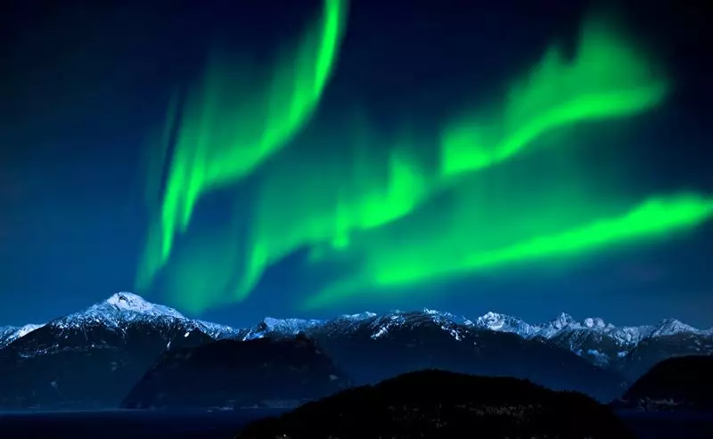

Sobre o aluno
Nome: Anna Luisa dos Santos Abreu
Turma: 2ºF
O lugar dos meus sonhos
Nome do lugar: Aurora Boreal(Canadá)

Por que quero conhecer esse lugar?
Seria uma lembrança marcante para a vida inteira. Imaginar o céu iluminado por luzes dançantes em tons de verde e violeta é algo simplesmente mágico. Não é apenas pela beleza do céu, mas pela sensação única de presenciar um fenômeno natural tão grandioso e raro
Curiosidades sobre esse lugar
- O nome Aurora Boreal foi inspirado na deusa romana Aurora (deusa do amanhecer) e em Bóreas, o deus grego do vento norte. Ou seja, literalmente “amanhecer do norte”.
- Ela é mais visível no inverno, porque as noites são mais longas e o céu costuma estar mais escuro
- Às vezes, a aurora parece mais intensa nas fotos do que ao vivo, porque a câmera capta mais luz do que o olho humano.